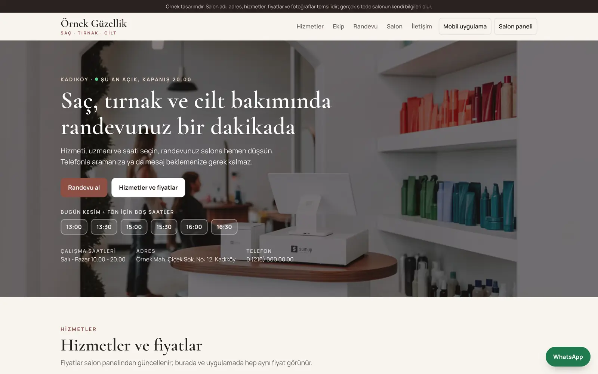
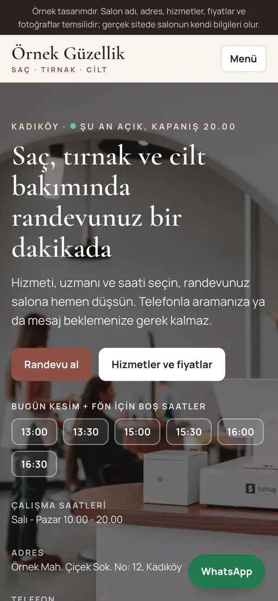

01
Randevu sistemi: berber ve güzellik salonu
Site · müşteri uygulaması · işletme paneli
Site, müşterinin telefonundaki uygulama ve işletme paneli aynı takvimi kullanır. Müşteri uzmanını ve boş saati seçer, randevu panele anında düşer. Telefonla gelen randevu da aynı takvime yazılır, iki kişi aynı saate yerleşmez.
- Uzman sütunlu takvim, saat kapatma
- Telefonla gelen randevu, onay ve ret
- Adisyon, uzman başına kasa ve prim
- Müşteri kartı ve geri kazanma mesajları
- Raporlar ve ayarlar

